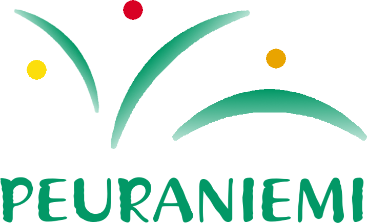

<footer class="text-center text-white text-lg-start mt-5">
        <div class="container p-4">
            <div class="row row-footer">
                <!-- sarake 1 logolle -->
                <div class="col-lg-3 col-md-3 mb-4 mb-md-0 column">
                    <!-- <h5 class="text-uppercase">Logo</h5> -->
                    <a href="../index.html">
                        
                    </a> 
                    
                </div>
                <!-- sarake 2 -->
                <div class="col-lg-4 col-md-4 mb-4 mb-md-0 column">
                    <!-- <h5 class="text-uppercase"></h5> -->
                    <p>
                        Kari Komulainen <br>                           <!-- MUISTA VAIHTAA YHTEYSTIEDOT OIKEAKSI!! --> 
                        0407415457 <br>
                        info@peuraniementaimitarha.fi
                    </p>
                </div>
                <!-- sarake 3 -->
                <div class="col-lg-4 col-md-4 mb-4 mb-md-0 column">
                    <!-- <h5 class="text-uppercase">Yhteystiedot</h5> -->
                    <p>
                        Peuraniemen Taimitarha Oy <br>                 <!-- MUISTA VAIHTAA YHTEYSTIEDOT OIKEAKSI!! -->
                        Y-tunnus: 1234567-8 <br>
                        Peuraniementie 1 <br>
                        12345 Kajaani
                    </p>
                </div>
                

                        
        </div>
        <div class="text-center">
            © 2025 Peuraniemen Taimitarha Oy
        </div>
     </footer>